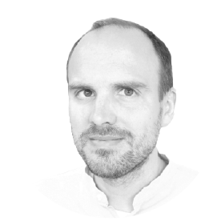

Ulrich Warring
Experimental physicist investigating controlled dynamics with trapped ions — spanning quantum simulation, thermodynamics, and precision sensing.
About
Based at the University of Freiburg, in the Quantum & Atomic Physics group led by Tobias Schätz. My work centres on trapped atomic ions — using them for quantum simulation, precision measurement, and the study of open quantum systems.
The path here started at the Physikalisches Institut in Heidelberg, working with Maarten DeKieviet on the helium-3 spin echo experiment. That work probed Casimir–Polder forces between neutral atoms and structured surfaces. A move to the Max-Planck-Institut für Kernphysik followed, where Alban Kellerbauer, other students and me studied the osmium anion via high-resolution laser spectroscopy. The precision techniques and systematic reasoning learned in Heidelberg have shaped my experimental approach ever since.
Next came the National Institute of Standards and Technology in Boulder, Colorado. There, working with Christian Ospelkaus, Dietrich Leibfried, and colleagues, the focus was microwave-based quantum control of trapped ions. That period provided the toolbox that has defined my research in Freiburg, where the position of research associate has been home since 2013.
Alongside research and teaching sits an ongoing effort to organise scientific knowledge transparently: the Open-Science Harbour separates invariant physical constraints from local experimental practices. It is part of a broader Harbour Architecture — a structural vocabulary for organising knowledge under conditions of uncertainty, maintained as an open reference. This documentation practice is not a separate activity from research; it is how the research is done.
Positions
- Since 2013Research Associate, Physikalisches Institut, University of Freiburg
- 2010–2012Postdoctoral Researcher, National Institute of Standards and Technology, Boulder, Colorado
- 2007–2009Max-Planck-Institut für Kernphysik, Heidelberg (with Alban Kellerbauer)
- 2006Physikalisches Institut, Universität Heidelberg (with Maarten DeKieviet)
Research
My research focuses on trapped atomic ions as a platform for quantum dynamics, quantum thermodynamics, and precision measurement. A common theme: highly controlled few-body systems probing fundamental questions about quantum behaviour, while developing tools for quantum technologies. Active areas include:
- Open quantum system dynamics in the ultrastrong coupling regime
- Two-dimensional ion trap architectures for quantum simulation
- Experimental studies of relaxation ordering and Mpemba-like effects in quantum systems
- Precision spectroscopy and ion-based sensing techniques
- Causal geometry of comparison networks across timekeeping and metrology
Quantum Control and Simulation with Trapped Ions
Our group develops trapped-ion architectures for multi-dimensional quantum simulations. Ions are trapped in reconfigurable two-dimensional arrays with individual control, enabling simulation protocols beyond what linear ion strings allow. This builds on microwave-based quantum logic developed at the National Institute of Standards and Technology. There we showed that microwave field gradients can address individual ions — a path toward scalable quantum architectures without tightly focused laser beams.
Selected publications
- Ospelkaus, Warring et al., “Microwave quantum logic gates for trapped ions,” Nature 476, 181–184 (2011). doi:10.1038/nature10290
- Mielenz, Kalis, Wittemer, Hakelberg, Warring et al., “Arrays of individually controlled ions suitable for two-dimensional quantum simulations,” Nat. Commun. 7, 11839 (2016). doi:10.1038/ncomms11839
- Warring et al., “Trapped Ion Architecture for Multi-Dimensional Quantum Simulations,” Adv. Quantum Technol. 2020, 1900137. doi:10.1002/qute.201900137
Open research
iontrap-dynamics — Python simulation package for trapped-ion spin–motion quantum dynamics, with a layered architecture separating physics, apparatus, and observation concerns (QuTiP backend)
Open Quantum Systems and Quantum Thermodynamics
A central theme: how strong coupling and memory effects shape the dynamics of open quantum systems. The platform is a single trapped magnesium ion coupled to an engineered bosonic environment. This allows us to probe regimes where standard weak-coupling descriptions break down.
Our most recent result shows time-dependent energy level renormalisation in the ultrastrong coupling regime — shifts of up to 15% of the bare system frequency, arising from system–environment correlations alone. Carried out with Alessandra Colla and Heinz-Peter Breuer, the work supports recent theoretical approaches to minimal-dissipation dynamics in quantum thermodynamics.
A related question — whether a system farther from equilibrium can relax faster than one closer to it — connects to an active open research programme on quantum Mpemba-like effects, carried out jointly with Alessandra Colla.
Selected publications
- Colla, Hasse, Palani, Schaetz, Breuer, Warring, “Observing time-dependent energy level renormalisation in an ultrastrongly coupled open system,” Nat. Commun. 16, 2502 (2025). doi:10.1038/s41467-025-57840-4
- Clos, Porras, Warring, Schaetz, “Time-resolved observation of thermalization in an isolated quantum system,” Phys. Rev. Lett. 117, 170401 (2016). doi:10.1103/PhysRevLett.117.170401
- Wittemer, Clos, Breuer, Warring, Schaetz, “Measurement of quantum memory effects and its fundamental limitations,” Phys. Rev. A 97, 020102(R) (2018). doi:10.1103/PhysRevA.97.020102
- Warring, “Exploring Quantum Mpemba Effects,” Physics (American Physical Society) 17, 105 (2024). doi:10.1103/Physics.17.105
Open research
Quantum Relaxation Ordering — open research programme on Mpemba-like relaxation ordering in trapped-ion systems, with pre-registered analysis protocols (with A. Colla)
Stroboscopic Travelling Waves — claim analysis dossier for phase-stable stroboscopic measurement of trapped-ion dynamics (Hasse et al., Phys. Rev. A 2024)
Measurement-Resolved Complexity — bounded numerical voyage on the complementarity between intrinsic complexity and operational variance in a spin-bosonic system, with a quantum-Fisher-information regime boundary as a secondary finding (Sail, 2026; repository)
Analogue Quantum Phenomena
Trapped-ion systems can realise phenomena normally associated with relativistic quantum field theory. By parametrically driving a trapped ion, we demonstrated phonon pair creation from inflated quantum fluctuations — a table-top analogue of the physics in an early universe and the dynamical Casimir effect.
A newer thread explores the formal connection between nonlinear interferometry in quantum optics (imaging with undetected photons) and SU(1,1) interferometers realisable in trapped-ion motional modes.
Selected publication
- Wittemer, Hakelberg, Kiefer, Schröder, Fey, Schützhold, Warring, Schaetz, “Phonon pair creation by inflating quantum fluctuations in an ion trap,” Phys. Rev. Lett. 123, 180502 (2019). doi:10.1103/PhysRevLett.123.180502
Open research
Precision Spectroscopy and Causal Metrology
In Heidelberg, the focus was high-resolution laser spectroscopy of the osmium anion (Os⁻), leading to the first optical hyperfine structure measurement in an atomic anion. In Freiburg, this spectroscopic thread continued. Together with Govinda Clos and Martin Enderlein, we demonstrated decoherence-assisted spectroscopy of a single Mg⁺ ion. The key insight: controlled coupling to the environment can be turned from a nuisance into a tool for high-resolution measurement.
More recently, precision metrology has opened into a broader question: what are the fundamental constraints on comparing clocks across distance? The Causal Clock Unification Framework extracts the architectural pattern shared by marine chronometers, railway time standardisation, and modern optical clock networks — a single coordination geometry that respects the causality bound on phase comparison.
Selected publications
- Clos, Enderlein, Warring, Schaetz, Leibfried, “Decoherence-assisted spectroscopy of a single Mg⁺ ion,” Phys. Rev. Lett. 112, 113003 (2014). doi:10.1103/PhysRevLett.112.113003
- Warring et al., “High-resolution laser spectroscopy on the negative osmium ion,” Phys. Rev. Lett. 102, 043001 (2009). doi:10.1103/PhysRevLett.102.043001
- Fischer, Canali, Warring, Kellerbauer, Fritzsche, “First optical hyperfine structure measurement in an atomic anion,” Phys. Rev. Lett. 104, 073004 (2010). doi:10.1103/PhysRevLett.104.073004
Open research
Near-Critical Sensing — epistemology of boundary sensing: how systems near phase transitions amplify proximity at the cost of invertibility, connecting atmospheric sentinel instruments to quantum boundary sensing in trapped ions (essay v0.4.0 + companion dossier)
Beyond the Laboratory
Some questions cross disciplinary boundaries when the same structural pattern recurs in different domains. The Generator Layers dossier applies the Harbour’s coastline and breakwater architecture to archaeology and cultural heritage: how many unbroken parent-to-child transmission links separate us from humankind’s earliest creative traditions? The Amazon Seasonal Discharge dossier tests a geophysical claim about the Amazon basin using the same claim analysis protocol.
These are not departures from physics. They are applications of the same methodological infrastructure — falsifiable frameworks, structured claim analysis, loud failure when assumptions break — to questions that happen to lie outside the laboratory.
Teaching
Coordination of the advanced laboratory courses (Fortgeschrittenen-Praktikum) for bachelor and master students at the Physikalisches Institut. Contributions to experimental physics courses at multiple levels.
Beyond formal teaching: consulting on and accompanying bachelor and master projects. Working alongside students on optical alignment, data analysis, and numerical modelling.
Current and recent courses
- Advanced laboratory courses for bachelor and master programmes
- Master of Applied Physics laboratory experiments
- “We could be even cooler — Particle dynamics near zero temperature from multiple perspectives”
- “Atomic Physics: From Nobel Prizes to Applications”
- “Aufzucht von Schrödinger’s Kätzchen: Vom Gedankenexperiment zur vollen Quantenkontrolle von einzelnen Atomen”
Course materials and pilot projects
One Propagator, Three Regimes — Beyond Standard Model capstone course connecting torsion balance, positronium, and Z⁰ experiments through the tree-level mediator propagator
What Is a Clock? — An Open Science School — free open-science curriculum framing clocks as operational comparisons between periodic processes, in four tiers from sundials and pendulums to pulsar timing
Rigorous experimental training matters. So does intellectual honesty about what we know and what we do not know. Both prepare students for research — and for responsible engagement with complex problems in any domain.